How Much Is Good Job Design Worth to the Employee?
Job characteristics like interesting work and learning opportunities have a retention impact equivalent to a $15k–$25k pay rise.
Research insights on workforce mental health, working hours, employee engagement, and psychosocial safety.

Job characteristics like interesting work and learning opportunities have a retention impact equivalent to a $15k–$25k pay rise.
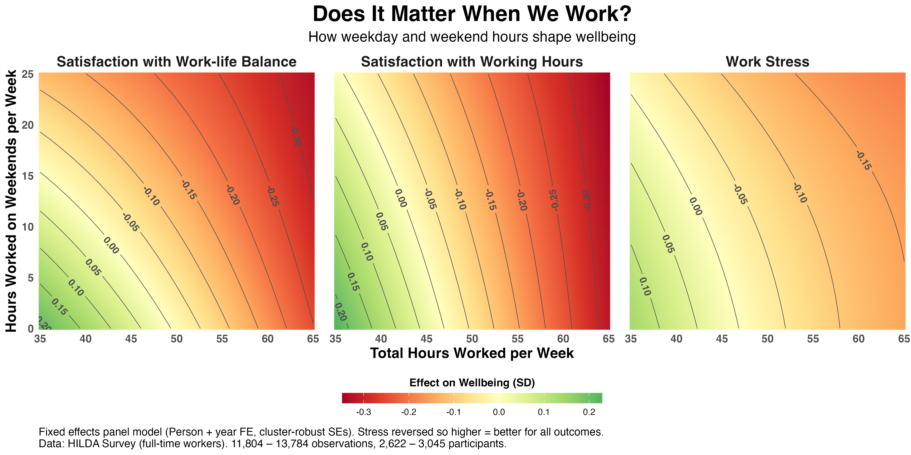
Weekend work hours are associated with reduced work-life balance even when total hours are modest.
HILDA panel data shows that gaining or losing flexible work entitlements has only small effects on work-life balance, job satisfaction, life satisfaction, and mental health.
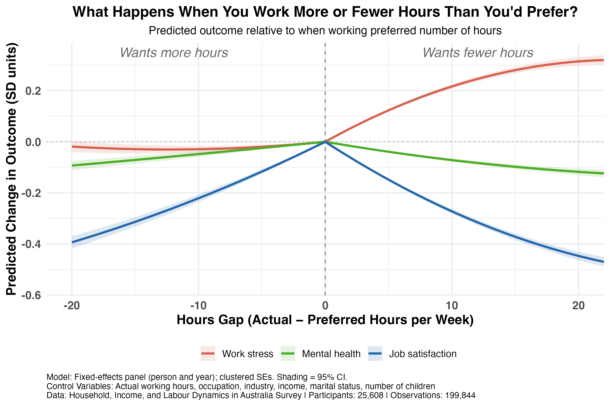
The gap between actual and preferred working hours is associated with meaningful reductions in stress, job satisfaction, and mental health.
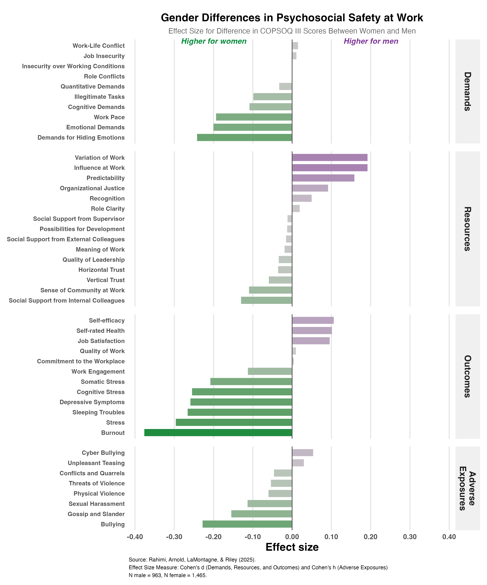
Australian COPSOQ III benchmarks reveal consistent gender gaps in demands, resources, and outcomes.

Harassment and bullying is the biggest driver, but exposure to traumatic events is growing fastest.

Effects compound over time in ways most risk assessments miss.

Visualising the economic impact reveals the true burden of mental health.

Mental health claims are the fastest growing, but how do they compare on cost?

The gap isn't only a generational story.Ggender plays an equally important role.
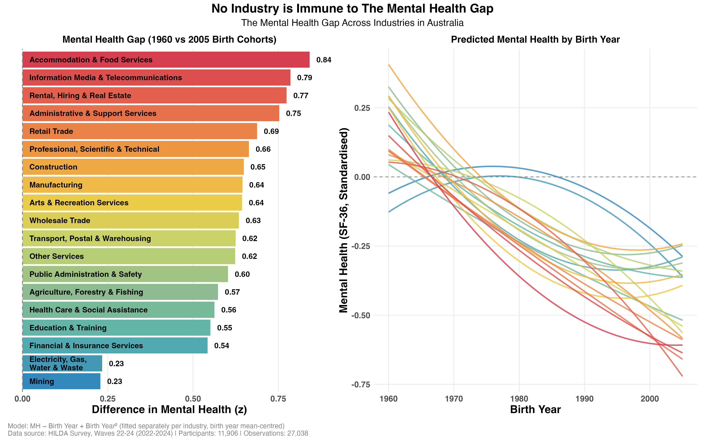
The gap exists in nearly every industry, but varies in magnitude and form.
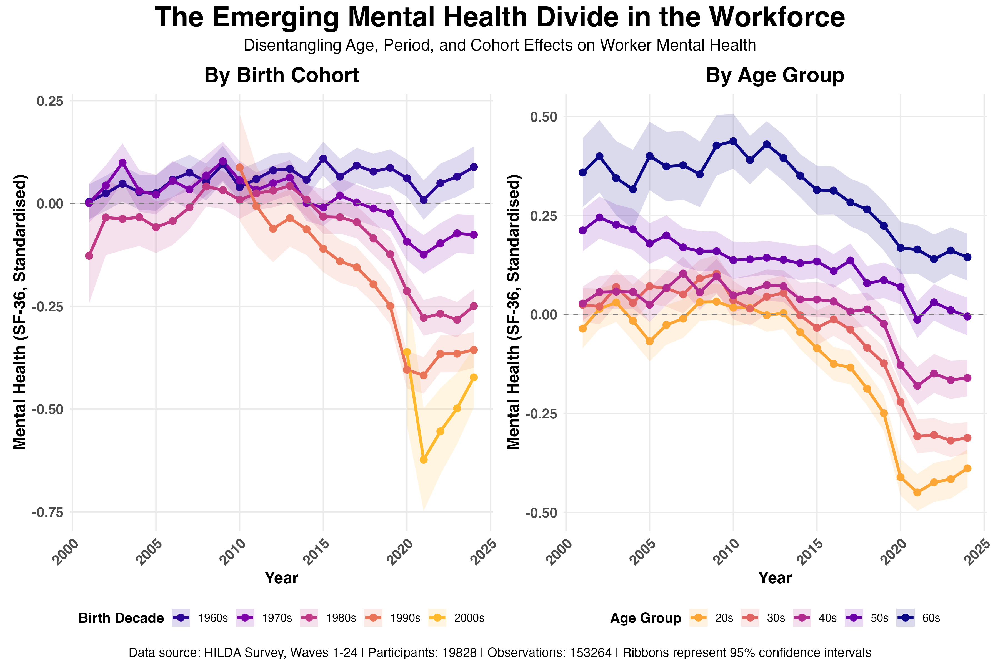
Is this most recent generation starting off with worse mental health? Or have young workers always struggled more?

Individual deterioration and a cohort effect are both at play.

Mental health claims grew 165% over the past decade.

The financial return varies dramatically by industry.

Higher pay increases the cost of turnover when it occurs.

You offer a generous pay rise. Yet months later, they resign.

Contrary to common rhetoric, casual work has actually decreased.

The flexibility to work from home has come with an unexpected cost.

The average work week dropped 3 hours since 2001, but individuals' hours have gone up.

A 'great compression' of working hours, with fewer people at the extremes.

The top 3% flagged were 3.5× more likely to actually leave or claim.
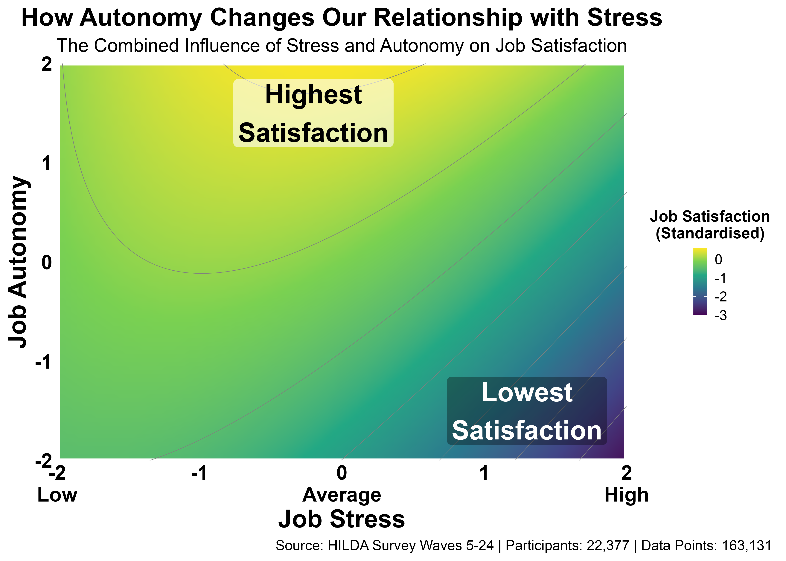
The most satisfied employees aren't those with low stress.

Stress isn't spread evenly across the economy.
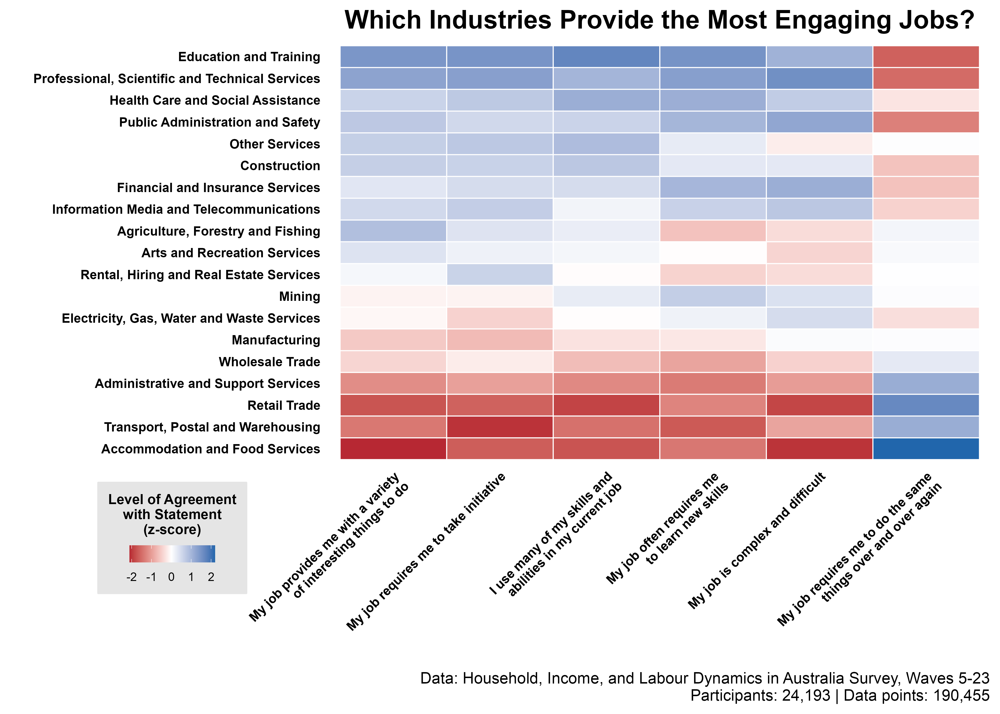
Knowledge-intensive industries offer the most dynamic roles.

Not all industries are equal when it comes to autonomy.

Salary predicts pay satisfaction in general, but not all industries conform.

Salary had no credible effect on job satisfaction once other factors were accounted for.

Presenteeism carries real health costs that compound over time.

Autonomy helps, but it's not a substitute for sustainable workloads.
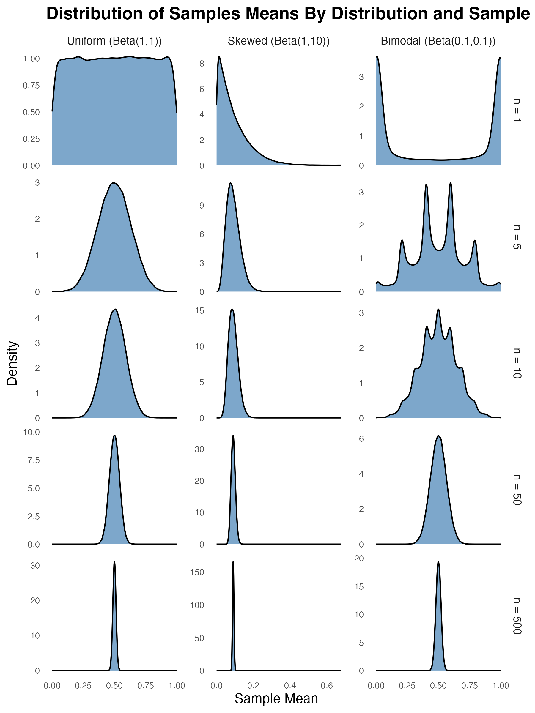
There are limits to the central limit theorem, and they matter more than you'd think.

Most turnover models give a prediction, but not the confidence you should have in it.

A bookshelf exercise that teaches us about sampling distributions and standard error.
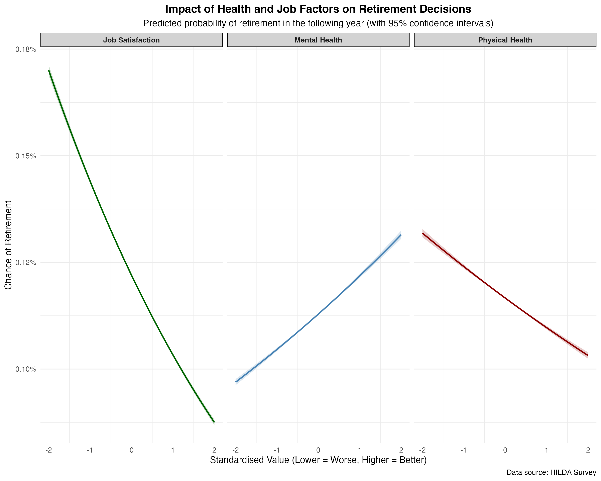
Job satisfaction stands out as the strongest predictor of retirement decisions.
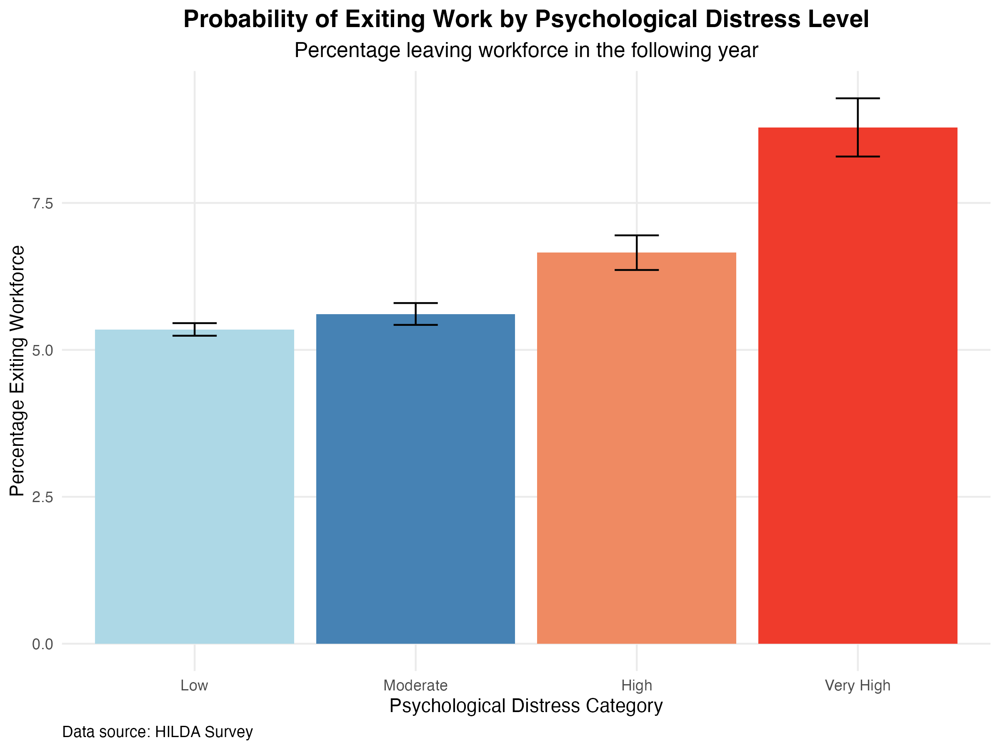
As distress intensifies, so does the likelihood of leaving the workforce.

The post-honeymoon hangover is predictable and so is the promotion boost.
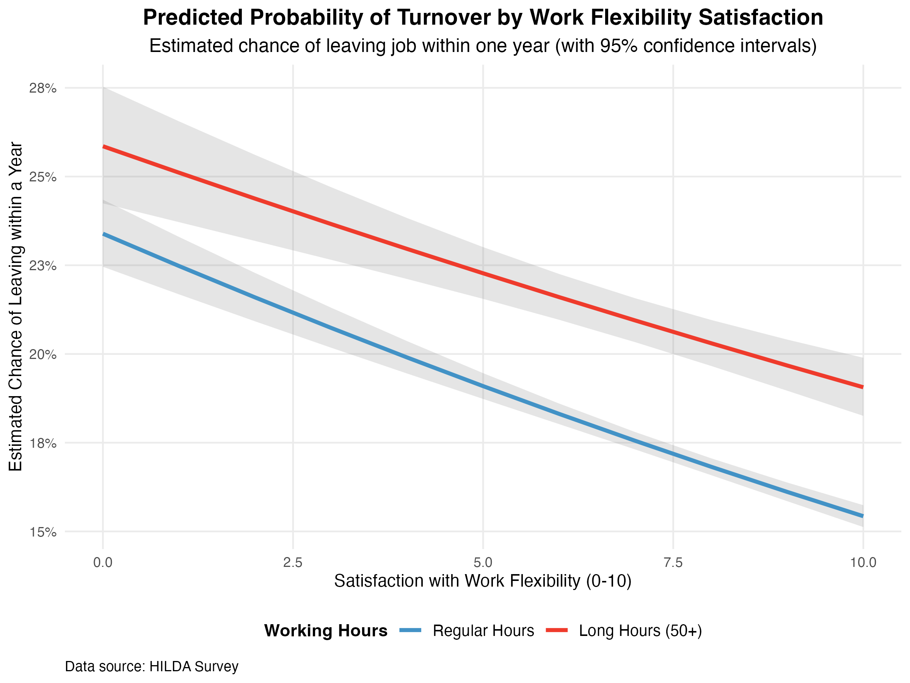
Flexibility helps, but it can't fully overcome the impact of excessive workloads.
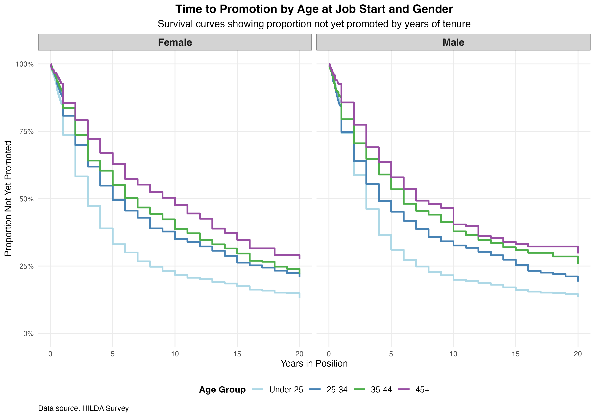
Promotions to management typically occur within the first 5–10 years of tenure.

Training pays off modestly across the board in promotions and pay.

By five years into parenthood, fathers earn about 30% more than mothers on average.
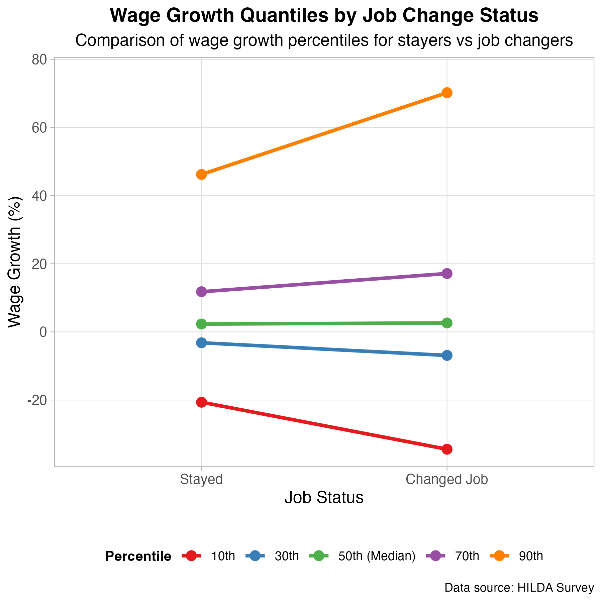
Median wage growth is similar whether you switch or stay,but the variance is very different.
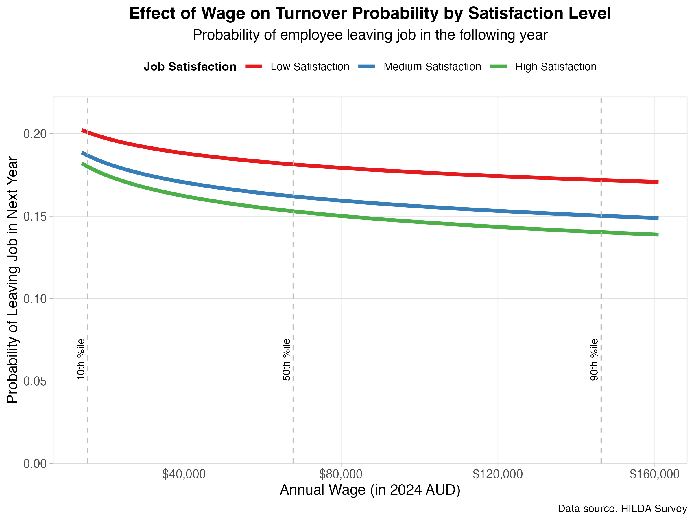
Job satisfaction is a far stronger predictor of retention than salary.

Data-informed models offer opportunities to capture workforce-specific fatigue patterns.
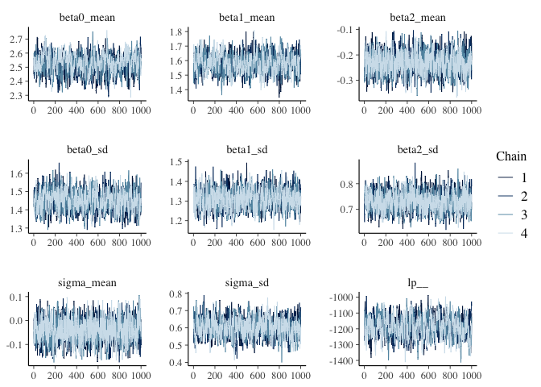
Not just for univariate Gaussians: Extending to truncated and multivariate distributions.